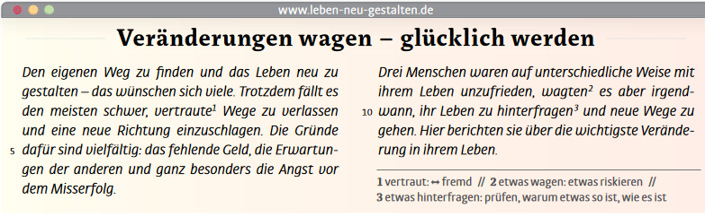
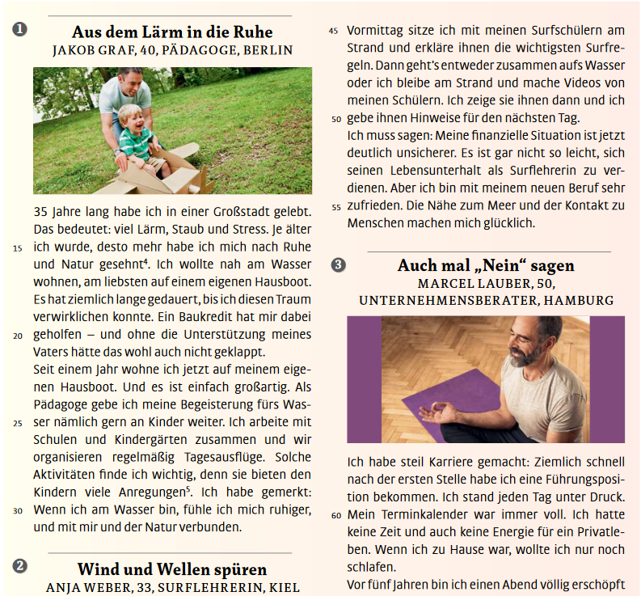
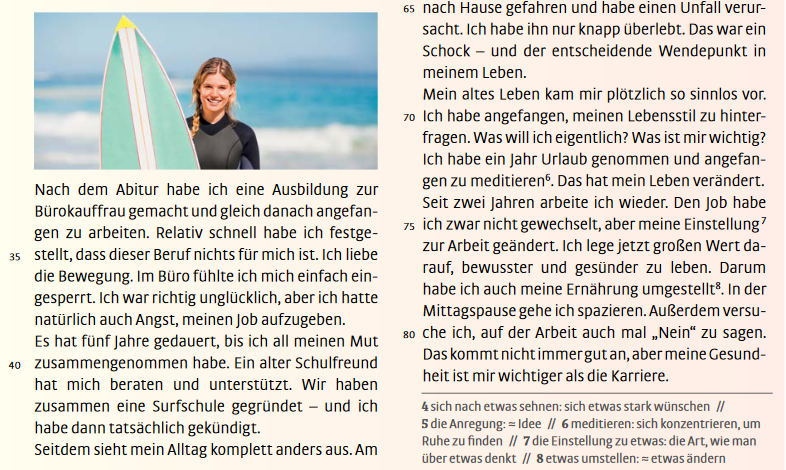

EOI_ALB2.2 - Tema 1.2: Veränderungen im Leben
1. Veränderungen wagen
Magazinartikel: Leben neu gestalten
Lesen Sie den Text. Auf welche Personen treffen die Fragen zu?



Übung: Leben neu gestalten
Auf welche Personen treffen die Fragen zu? Einige Fragen treffen auf zwei Personen zu.
Wortschatz
Welches Verb passt? Ergänzen Sie.
aufgeben - bewerben - entdecken - gewöhnen - gründen - heiraten - umziehen - verabschieden
Pronomen
Welches Pronomen passt?